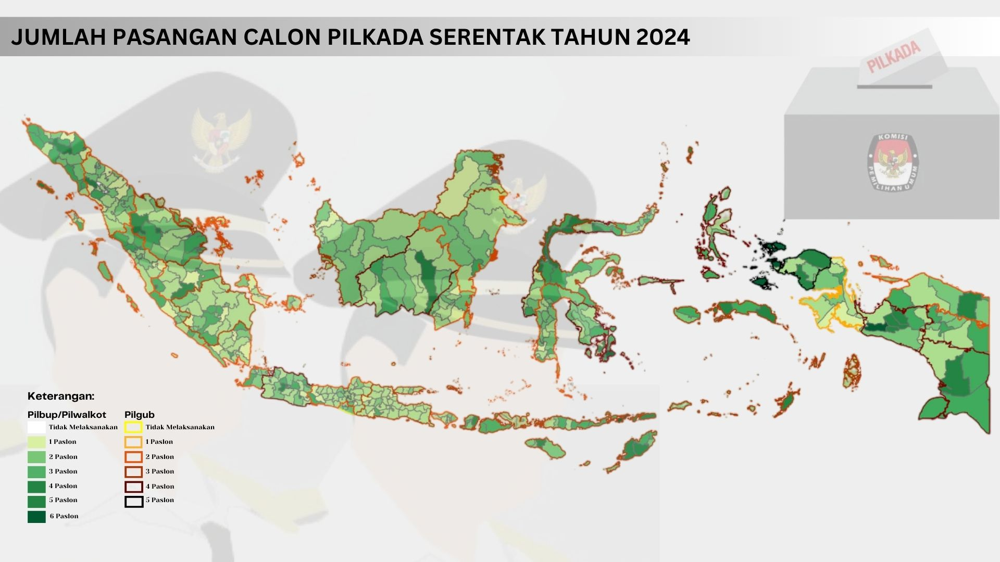

Pilkada 2024, Serentak dan Sekali
Pilkada serentak dilaksanakan di 545 daerah, yaitu 37 provinsi, 93 kota, dan 415 kabupaten.

27 November 2024 menjadi momentum penting bagi hampir seluruh warga Indonesia. Hal ini karena Pemilihan Kepala Daerah (Pilkada) serentak akan dilaksanakan di tanggal tersebut dan akan diselenggarakan hampir di seluruh Indonesia. Dengan total 545 daerah yang turut terlibat, baik tingkat provinsi, kabupaten, bahkan kota. Jumlah ini sangat jauh meningkat dibandingkan dengan Pilkada serentak di tahun 2020 yang hanya dilaksanakan di 270 daerah.
Persentase diadakannya Pilkada mencapai 97% di tingkat provinsi, 99% di tingkat kabupaten, dan 95% di tingkat kota. Di mana, persentase ini dihitung dari perbandingan antara wilayah yang menyelenggarakan Pilkada dan total wilayah administrasi di setiap tingkat pemerintahan. Peta di atas menunjukkan distribusi wilayah yang akan melaksanakan Pilkada beserta jumlah pasangan calon di masing-masing daerah. Adapun rincian wilayah yang menyelenggarakan Pilkada mencakup 37 provinsi, 415 kabupaten, dan 93 kota.
| Kategori | Provinsi | Kabupaten | Kota |
|---|---|---|---|
| Tidak Melakukan Pilkada | 1 | 1 | 5 |
| 1 Paslon | 1 | 35 | 5 |
| 2 Paslon | 16 | 158 | 25 |
| 3 Paslon | 11 | 114 | 32 |
| 4 Paslon | 8 | 76 | 21 |
| 5 Paslon | 1 | 28 | 10 |
| 6 Paslon | - | 4 | - |
| Total Daerah Mengadakan Pilkada | 37 | 415 | 93 |
Berdasarkan tabel rekapitulasi di atas, terdapat distribusi jumlah pasangan calon (Paslon) yang mengikuti pemilihan kepala daerah (Pilkada) baik di tingkat provinsi, kabupaten, dan kota. Terlihat variabilitas pada jumlah pasangan calon di setiap tingkat daerah. Juga diinformasikan bahwa hanya terdapat 1 provinsi, 1 kabupaten, dan 5 kota saja yang tidak melaksanakan Pilkada. Daerah tersebut adalah Daerah Keistimewaan Jakarta (DKJ) untuk pemilihan di tingkat kabupaten/kota (pada seluruh kota di Provinsi Jakarta dan Kab. Kepulauan Seribu) dan Daerah Istimewa Yogyakarta (DIY) untuk pemilihan di tingkat provinsi. Hal ini karena dua wilayah tersebut merupakan wilayah keistimewaan yang memiliki aturan khusus terkait pemilihan kepala daerah. Di Jakarta, pemilihan kepala daerah dilakukan dalam konteks pemilihan gubernur, bukan bupati/walikota, mengingat status Jakarta sebagai daerah khusus ibu kota. Sementara itu, di Yogyakarta, jabatan gubernur secara tradisional dipegang oleh Sultan Yogyakarta yang bertahta, sehingga tidak memerlukan pemilihan umum seperti di wilayah lain.
Tabel juga menyampaikan informasi bahwa di tingkat provinsi, jumlah Paslon terbanyak tercatat pada kategori 5 Paslon, yang hanya ditemukan pada 1 provinsi. Sementara itu, jumlah Paslon yang paling umum di tingkat ini adalah 2 Paslon, dengan 16 provinsi masuk dalam kategori ini. Di tingkat kabupaten, jumlah Paslon terbanyak tercatat pada kategori 6 Paslon, yang hanya ditemukan di 4 kabupaten. Namun, jumlah Paslon yang paling umum di tingkat ini adalah 2 Paslon, dengan 158 kabupaten masuk dalam kategori ini. Sementara itu, di tingkat kota, jumlah Paslon terbanyak adalah 5 Paslon, yang hanya ditemukan di 10 kota. Sementara jumlah Paslon yang paling umum adalah 3 Paslon, dengan 32 kota termasuk dalam kategori ini. Menariknya, terdapat fenomena calon tunggal (1 Paslon) di 1 provinsi, 35 kabupaten, dan 5 kota. Dalam kasus calon tunggal ini, pemilih diberikan opsi untuk memilih "kotak kosong" sebagai bentuk penolakan terhadap calon tunggal tersebut. Jika kotak kosong memperoleh suara mayoritas, maka Pilkada akan diulang, dan calon yang kalah dari kotak kosong tidak diperkenankan mengikuti pemilihan ulang, memberikan kesempatan bagi calon-calon baru untuk maju.